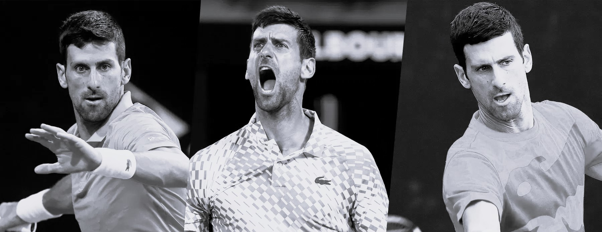
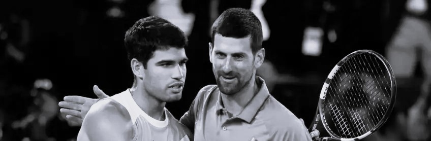
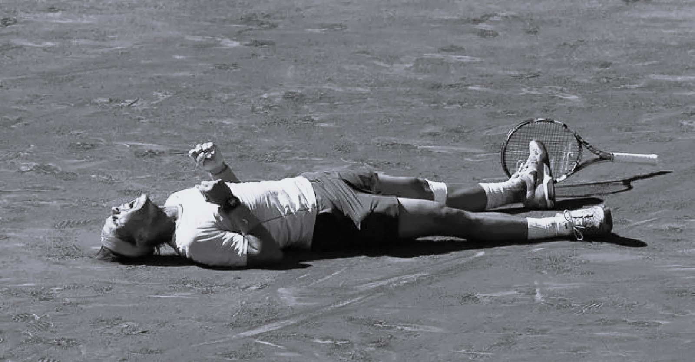
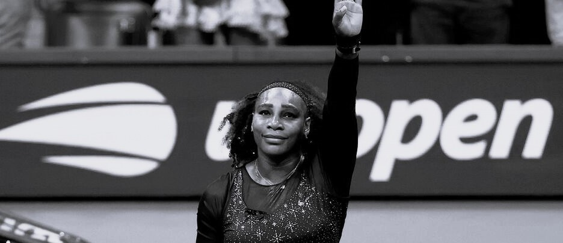

Djokovic entre dans l’histoire
Novak Djokovic remporte son 24e titre du Grand Chelem.
Grâce à sa régularité, sa préparation physique et son mental très solide, il s’impose comme l’un des plus grands joueurs de tous les temps..
Tout savoir sur ce sport passionant !
découvrez l'univers du Tennis

Journal de La petite Balle Jaune

Novak Djokovic remporte son 24e titre du Grand Chelem.
Grâce à sa régularité, sa préparation physique et son mental très solide, il s’impose comme l’un des plus grands joueurs de tous les temps..

En 2023, Carlos Alcaraz bat Novak Djokovic en finale de Wimbledon après un match spectaculaire. Cette victoire symbolise l’arrivée d’une nouvelle génération dans le tennis mondial..

Rafael Nadal domine encore la terre battue.
Avec ses nombreux titres sur terre battue, il a dominé ce tournoi comme aucun autre joueur dans l’histoire du tennis. Son record de 14 titres à Roland-Garros reste inégalé.

En 2022, Serena Williams dispute son dernier tournoi majeur.
Elle laisse une trace immense dans l’histoire du tennis.